1들어가기
입력 주소를 열고 「학생」에 접속코드 8자리를 넣은 뒤 「들어가기」. 소문자로 쳐도 됩니다. 한 번 들어가면 같은 휴대폰에서는 다음부터 바로 열립니다.
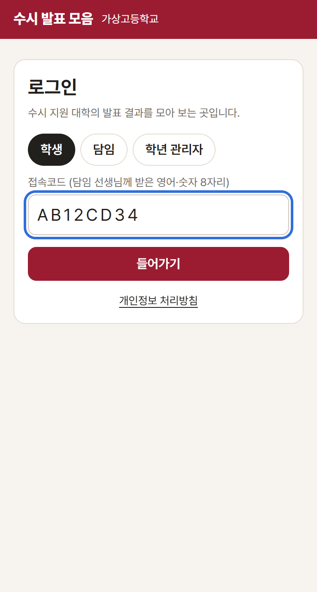
2내 지원 대학 확인
내가 원서를 낸 대학이 카드로 나옵니다. 학교가 나이스 「대입전형자료 제공현황」으로 넣어 둔 것이라 따로 적을 필요가 없습니다. 카드의 🔢 수험번호는 대학 누리집에서 합격자를 조회할 때 쓰세요.
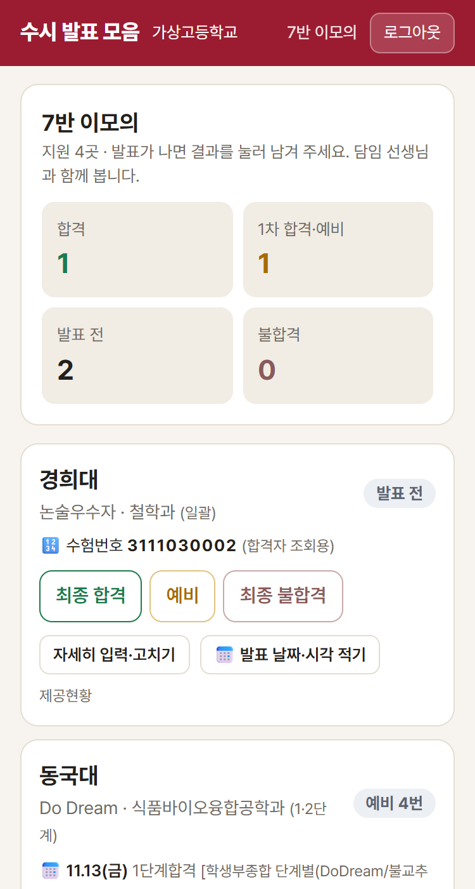
- 📅 는 모집요강 기준 발표 일정(날짜·시각)입니다. 날짜·시간은 반드시 대학 공지로 다시 확인하고, 다르면 5번처럼 직접 고쳐 적으세요.
- (1·2단계)는 1단계 발표 뒤 면접 등을 거쳐 최종 발표하는 전형, (일괄)은 한 번에 최종 발표하는 전형입니다.
3발표가 나면 단추 누르기
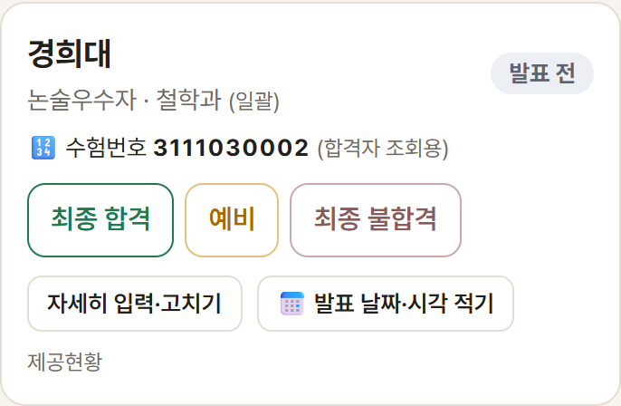
| 1·2단계 전형, 1단계 발표 | 1차 합격 또는 1차 불합격 |
| 1차 합격 뒤 최종 발표 | 최종 합격 · 예비 · 최종 불합격 · 면접에 안 갔으면 2차 미응시 |
| 한 번에 발표하는 전형 | 최종 합격 · 예비 · 최종 불합격 |
| 예비였다가 연락 옴 | 추가 합격 (몇 차인지 적기) |
| 예비였는데 끝내 안 옴 | 최종 불합격 |
단추를 누르면 '저장하는 중…'이 잠깐 뜬 뒤 저장됩니다(몇 초 걸릴 수 있어요). 저장되면 카드 오른쪽 위 결과가 바뀌고, 다음에 누를 단추가 나옵니다.
4예비 번호 · 추가 합격 차수 적기
예비를 누르면 창이 열립니다. 예비 번호를 숫자로 적고 「저장」.
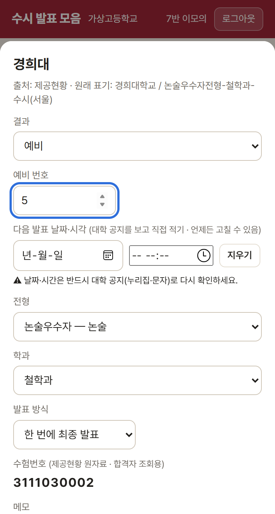
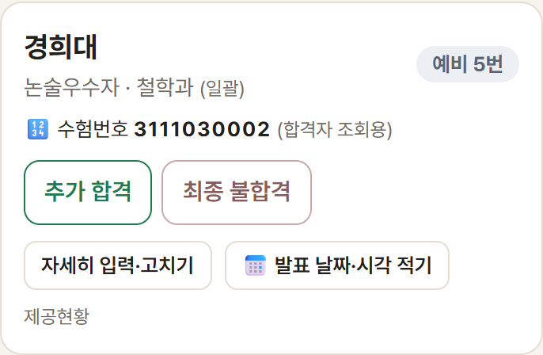
추가 합격 연락을 받으면 추가 합격을 누르고 몇 차인지(예: 2차) 적습니다.
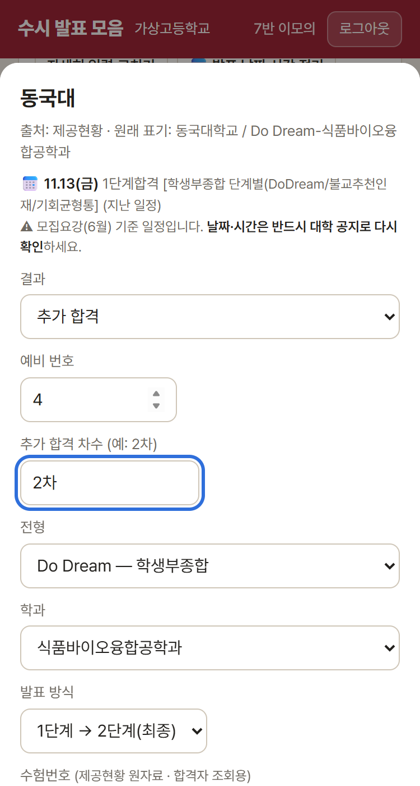
5발표 날짜·시각 적기 · 고치기
카드의 「📅 발표 날짜·시각 적기」를 누르면 날짜와 시각을 적는 칸이 열립니다.
- 직접 적기: 대학 공지에서 본 날짜·시각을 적고 「저장」.
- 일정표 날짜로 채우기: 그 전형의 일정이 있으면 「일정표 날짜 넣기」 단추가 나옵니다. 누르면 채워지니, 공지와 같은지 보고 저장하세요.
- 고치기·지우기: 같은 단추(「고치기」)로 언제든 바꾸고, 「지우기」로 비울 수 있습니다.
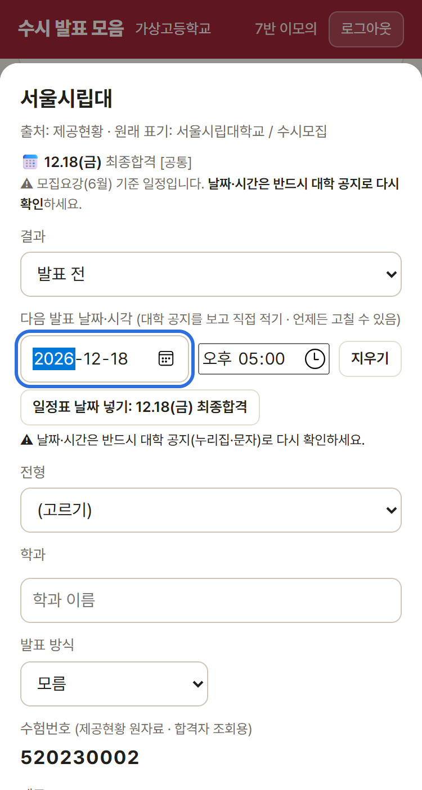
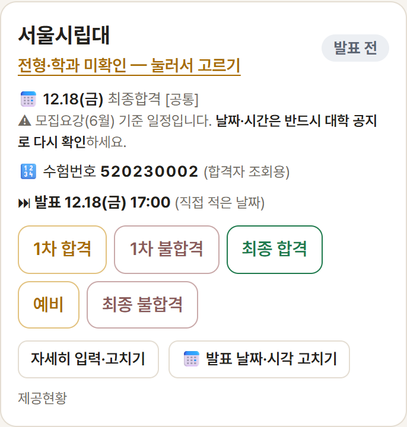
6「전형·학과 미확인」이 보이면
일부 대학은 학교에 넘어온 자료에 전형 이름이 없습니다. 카드의 「전형·학과 미확인 — 눌러서 고르기」를 누르고 내가 낸 전형과 학과를 고르세요. 목록에 없으면 「목록에 없음 — 직접 적기」.
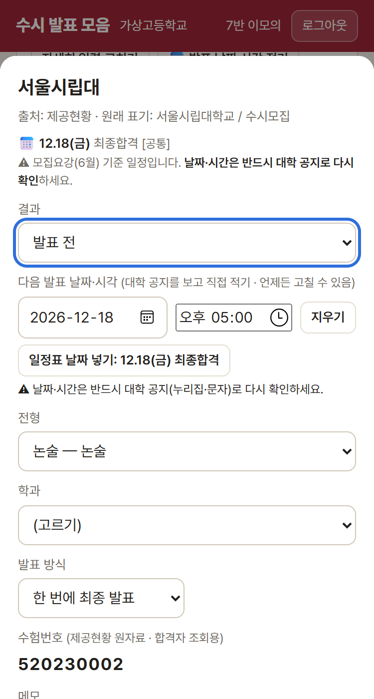
7목록에 없는 대학 더하기
사관학교·경찰대·KAIST처럼 학교 자료에 안 뜨는 곳에 냈다면, 화면 맨 아래 「＋ 목록에 없는 대학 더하기」. 대학 이름을 고르거나 적고, 전형·발표 방식과 (있으면) 수험번호를 적은 뒤 「더하기」.
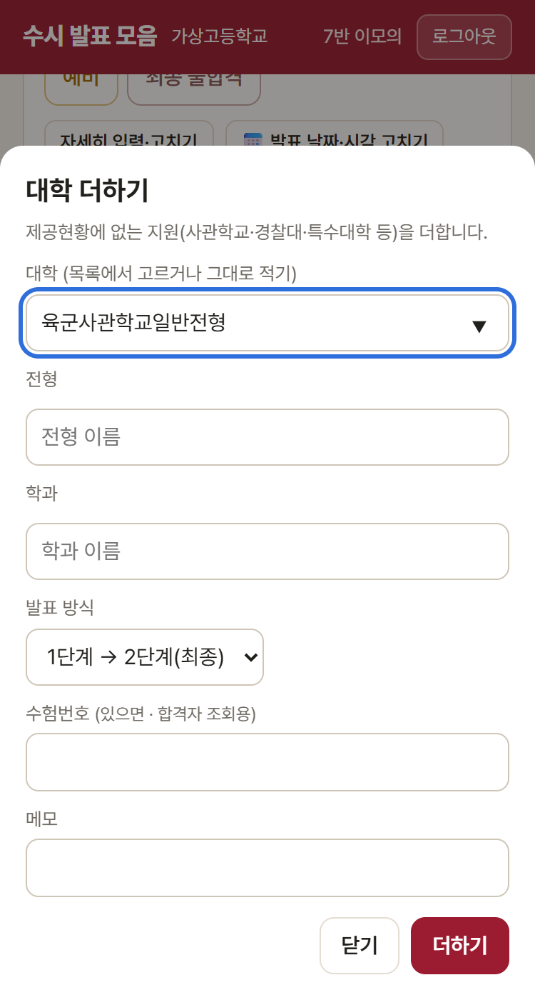
잘못 더한 대학은 담임 선생님께 말씀드리면 지워 주십니다(학생은 지울 수 없어요).
8내 정보는 어떻게 쓰이나
이 화면에는 반·번호·이름, 지원 대학·전형·학과, 수험번호, 발표 결과, 내가 적은 날짜·메모가 들어 있습니다. 나와 담임 선생님, 학년 담당 선생님만 볼 수 있고, 다른 친구는 볼 수 없습니다. 학교의 구글 스프레드시트에 저장되며(구글 서버는 국외에 있을 수 있음), 입시가 끝나면 학교가 모두 지웁니다. 자세한 내용은 화면 맨 아래 「개인정보 처리방침」에 있고, 지우거나 고쳐 달라고 할 때는 담임 선생님께 말씀드리면 됩니다.
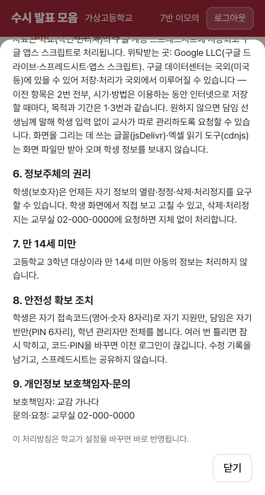
이럴 때는
결과를 잘못 눌렀어요
카드의 「자세히 입력·고치기」 → 맨 위 「결과」에서 맞는 것을 다시 고르고 저장하면 됩니다. 단추에 없는 결과도 여기서 모두 고를 수 있습니다.
"그 사이 다른 사람이 바꿨습니다"가 떠요
담임 선생님이 같은 대학 결과를 먼저 고친 경우입니다. 화면에 최신 내용이 다시 나오니 확인하고, 필요하면 다시 저장하세요.
"지금은 학생 입력이 꺼져 있습니다"가 떠요
우리 학교는 선생님이 입력하기로 한 경우입니다. 결과를 담임 선생님께 알려 드리세요. 화면은 계속 볼 수 있습니다.
접속코드가 틀리다고 나와요 / 잃어버렸어요
0(숫자)과 O(영어)처럼 헷갈리는 글자는 코드에 쓰지 않습니다. 그래도 안 되면 담임 선생님께 「새로 만들기」를 부탁하세요. 새 코드를 받으면 예전 코드는 쓸 수 없습니다.
내가 낸 대학이 빠져 있거나, 안 낸 대학이 있어요
빠진 대학은 7번처럼 직접 더하고, 안 낸 대학은 담임 선생님께 말씀드려 지워 달라고 하세요.
공용 컴퓨터에서 들어갔어요
다 쓰고 나서 오른쪽 위 「로그아웃」을 꼭 누르세요.